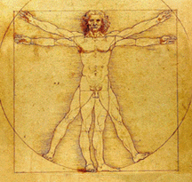

| EN | ES | CA | |
WORKSHOP: Crisis and futures of capitalism: 29 November 2018 |
|||||
Call for Abstracts & Papers: The current crisis of late capitalism has taken on new dimensions. Nihilism, populism and religious fundamentalism spring up from its core. The state of exception has become permanent. 'Everything solid vanishes in the air': the continuous revolution of technological capitalism puts into crisis the concept of the human and the very idea of ethics. Our growing environmental crisis is rooted in this technological revolution and in the myth of humanity’s possession of the Earth. The spectre of dystopia runs through contemporary societies and engenders a return to the apocalyptic, eschatological and salvation myths. This systemic crisis is also meaningful, and it has generated a new wave of literary and filmic interpretations (Houellebecq, Márkaris, McEwan, Dardenne, von Trier, Costa, Pamuk, Raja Alem, Chirbes, Molina, etc.). The aim of this workshop is to reflectively use the tools of cinema, literature and philosophy to engage questions such as: How do contemporary cinema and literature represent and interpret the relationship between nihilism and the logic of spectacular violence? How does the invisibilization of war coexist with the most extreme forms of violence displayed in digital and media contexts? Are new forms of nihilism emerging today? How are these linked to religion and religious fundamentalism? How are myths (apocalyptic, saviours, etc.) reinterpreted by cinema and literature? What forms of narrative and representation are used today in literature and cinema to account for the current crisis of meaning? How does contemporary art represent the ethical challenges that arise from capitalism’s continuous transformation of the body and the Earth?
Papers can be comparative studies or case studies and can analyse artists and filmmakers from any geographical and cultural locations. Those interested should send a proposal (title, summary, affiliation) of 300-400 words to the organisers before the 20th of May 2018.
All submissions must be sent to: |
 Details and deadlines: Workshop Date: Location: Deadline for submissions: Languages accepted: Organisers: Camil Ungureanu Sonia Arribas Rebecca Anne Peters |
||||
|
|||||